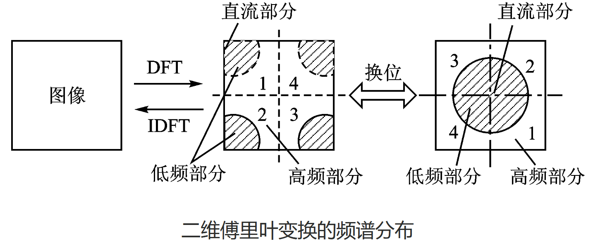
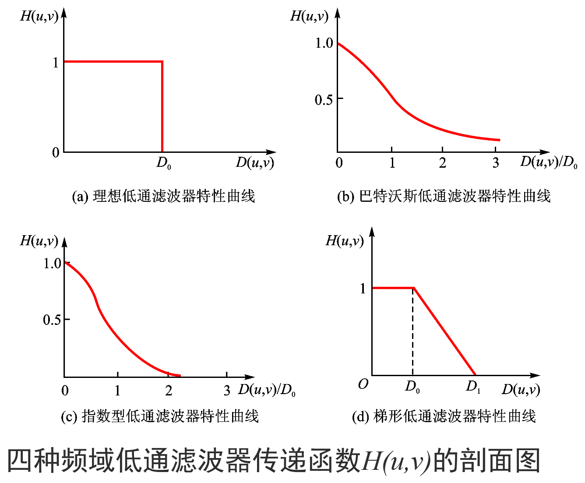
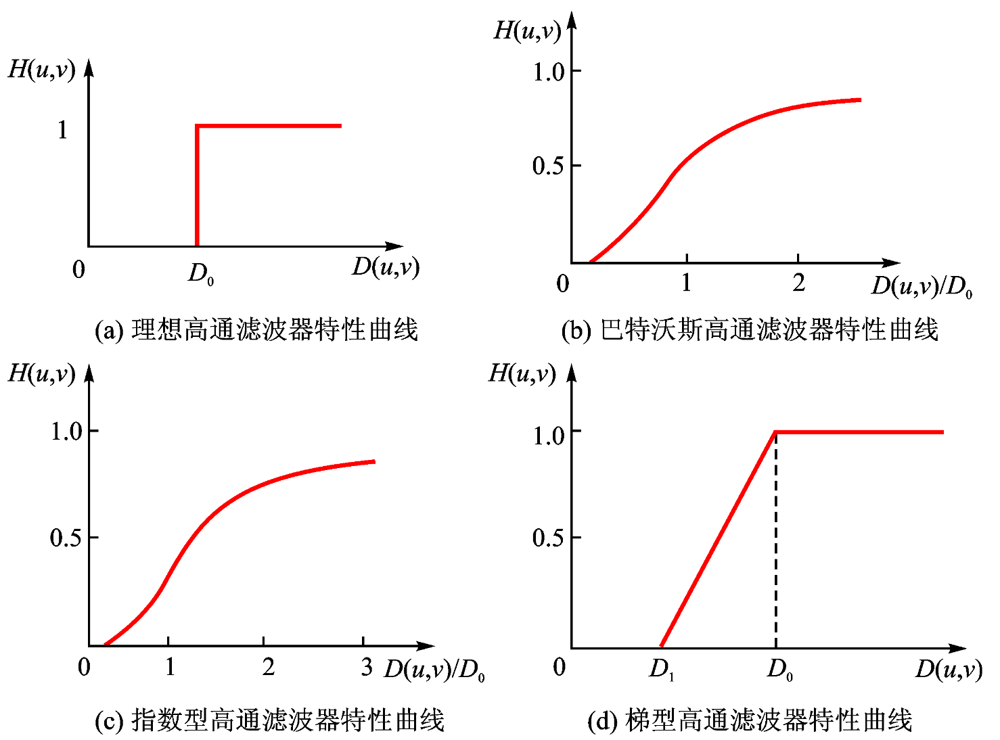

数字信号处理复习总结Part3
07 调制、解调和滤波
一、通信系统
- 基本概念
-
通信：把发送者拥有的消息传递给接收者
-
为达到通信的目的
- 要把信源消息经发送设备转变为适合信道传输的信号，因此需要进行调制、编码、放大等操作。
- 发送和接收设备还可能包括多路复用、加密、纠错等处理设备
- 传输媒介也称为信道，可为导线、电缆、光纤等。混入信道的噪声无法避免，在构建通信系统时需要考虑 噪声的影响。

- 通信系统的分类
- 按照传输介质分类：
- 有线信道（电缆、光缆等）
- 无线信道（长波、中波、短波、微波、光通信）
- 按照频率范围分类，不同波段使用的传输媒质不同：
- 如短波使用同轴电缆
- 高于 30 MHz 的电波称为微波
- 长、中、短波所占频带总和约30MHz，而微波频带约300GHz
- 频率范围为 20Hz-20kHz的音频信号，在大气层传输时会剧烈衰减，但高频率信号可在大气层中传播到较远距离
- 若音频信号频率为10kHz，直接传输需要7.5km长的天线，在大气层中传输音频，需要将低频信号**“加 载”或“嵌入”**到一个高频信号上，再通过天线向空间辐射。
- 天线长度与辐射电波波长数量级一致(1/4波长以上)时，才能有较好的辐射特性，将信号传递到远方。
- 不同通信波段使用不同尺寸的通信天线，天线尺寸和波长成正比关系

- 信道传输
- 调制：将低频信号“加载”或“嵌入”到一个高频振荡信号上
- 解调：从含有低频信号的高频振荡信号中提取低频信号
二、信号调制
-
待发送的信号 $x(t)$ 为调制信号，用于完成载送信号任务的高频振荡信号 $c(t)$ 为载波信号，调制后的高频信号称为已调波。（$x(t)$ 不一定是低频信号）
-
载波 $c(t)$ 的某个参数（幅度、频率或相位）随 $x(t)$ 做有规律变化：

-
调制过程中，$A,\omega_c,\varphi,\theta(t)$ 都可以随 $x(t)$变化
-
幅度调制：$A$ 随 $x(t)$ 线性改变，而 $\omega_c,\varphi$ 不变
-
角度调制：$\theta(t)$ 随 $x(t)$ 线性改变，而 $A$ 不变，分为频率调制（FM）和相位调制（PM）
- 正弦载波调幅
- 信号调幅，设置载波信号 $c(t)=\cos(\omega_c t)$
- 为使幅度 $A$ 随调制信号 $x(t)$ 线性变化（将 $x(t)$ 嵌入 $c(t)$），将二者相乘：$y(t)=x(t)\cdot c(t)=x(t)\cdot\cos(\omega_c t)$

- 根据调制定理，$Y(j\omega)=\frac{1}{2\pi}[X(j\omega)*\pi[\delta(\omega+\omega_c)+\delta(\omega-\omega_c)]]=\frac{1}{2}[X(j(\omega+\omega_c))+X(j(\omega-\omega_c))]$
- 若 $\omega_c>\omega_m$，则两部分频谱不会重叠
- 调制前后总能量不变
- 复指数载波调制
- 设 $c(t)=e^{j(\omega_c t+\varphi)},\varphi=0$ 进行调幅，可得 $X(j\omega)=\frac{1}{2\pi}[X(j\omega)*2\pi[\delta(\omega-\omega_c)]]=X(j(\omega-\omega_c))$
- 不要求 $\omega_c>\omega_m$
- 可通过滤波法（高通、低通滤波器）分别得到上下边带

- 单边带调幅
-
只发送上边带或者下边带信号，节省能量和带宽
-
采用带通滤波器实现单边带幅度调制

三、信号解调
- 同步解调
-
从 $y(t)$ 中恢复出 $x(t)$，即从 $Y(j\omega)$ 中恢复出 $X(j\omega)$
-
$y(t)=x(t)\cdot c(t)=x(t)\cdot\cos(\omega_c t)$，为移回 $X(j\omega)$，用 $\cos(\omega_c t)$ 再次乘以 $x(t)$：
$r(t)=y(t)\cos\omega_c t=x(t)\cdot\cos^2(\omega_c t)=\frac{1}{2}x(t)+\frac{1}{2}x(t)\cos(2\omega_c t)$
$R(j\omega)=\frac{1}{2}X(j\omega)+\frac{1}{4}[X(j(\omega+2\omega_c))+X(j(\omega-2\omega_c))]$
-
解调后，原始信号信息保存完好，仅有1/2系数差别
滤波器带宽需要满足 $\omega_m<B<2\omega_c-\omega_m$

- 收发端相位不等遇到的问题
- 若调制与解调端载波相位不等，则解调后的信号将会失真
- $r(t)=x(t)\cos(\omega_c t+\varphi)\cos(\omega_c t+\theta)=\frac{1}{2}x(t)\cos(\varphi-\theta)+\frac{1}{2}x(t)\cos(2\omega_c t+\varphi+\theta)$
- 因此 $r(t)=\begin{cases}x(t),&\varphi=\theta\0,&\varphi-\theta=\frac{\pi}{2}\end{cases}$，==相位差为$\frac{\pi}{2}$ 时，无法恢复信号==
四、信道复用
- 频分复用（Frequency-division multiplexing，FDM）
-
不同信号占用不同的频带

- 时分复用（Time-Division Multiplexing,TDM）
-
时分复用的基础是抽样定理

08 离散信号的傅里叶变换
一、离散信号（序列）的傅里叶变换
- DTFT/IDTFT
- 离散时间傅里叶变换（DTFT）: $\mathrm{DTFT}[x[n]]=X(e^{j\omega})=\sum\limits_{n=-\infty}^{\infty}x[n]e^{-jn\omega}$
- 逆变换（IDTFT）：$\mathrm{IDTFT}[X(e^{j\omega})]=x[n]=\frac{1}{2\pi}\int_{-\pi}^{\pi}X(e^{j\omega})e^{j\omega n}d\omega$
- $X(e^{j\omega})$ 是复数，是以 $2\pi$ 为周期的周期函数
- 收敛充分条件：能量受限或绝对可和
-
DTFT的性质
性质 数学表达式 时移 $\mathrm{DTFT}\left{x[n-k_0]\right}=e^{-j\omega k_0}X(e^{j\omega})$ 频移 $\mathrm{DTFT}\left{e^{j\omega_0n}x[n]\right}=X(e^{j(\omega-\omega_0)})$ 能量定理 $\sum\limits_n 时域卷积 ==$\mathrm{DTFT}\left{x[n]*h[n]\right}=X(e^{j\omega})H(e^{j\omega})$== 频域卷积 ==$\mathrm{DTFT}\left{x[n]h[n]\right}=\frac{1}{2\pi}\int_{-\pi}^{\pi}X(e^{j\theta})H(e^{j(\omega-\theta)})d\theta$== 频域微分 $\mathrm{DTFT}\left{nx[n]\right}=j\frac{dX(e^{j\omega})}{d\omega}$
二、离散信号的频域分析
- DFS/IDFS
- 离散傅里叶级数（DFS）：$\tilde{X}[k]=\mathrm{DFS}[\tilde{x}[n]]=\sum\limits_{n=0}^{N-1}\tilde{x}[n]W_N^{kn},W_N=e^{-j\frac{2\pi}{N}}$
- 逆变换（IDFS）：$\tilde{x}[n]=\mathrm{IDFS}(\tilde{X}[k])=\frac{1}{N}\sum\limits_{k=0}^{N-1}\tilde{X}[k]W_N^{-kn}$
- 整体记为：$\tilde{x}[n]\overset{DFS}{\longleftrightarrow}\tilde{X}[k]$
- 常用离散周期序列的频谱
- 周期单位脉冲序列 $\delta_N[n]$：$\tilde{X}[k]=\mathrm{DFS}\left{\tilde{x}[n]\right}=\sum\limits_{n=0}^{N-1}\delta_N[n]W_N^{nk}=1$
- 正弦序列，如周期序列 $\tilde{x}[n]=\cos(\pi n/6)$ 的频谱，$N=12$ ：
$\tilde{x}[n]=\frac{1}{2}e^{j\frac{2\pi}{12}n}+\frac{1}{2}e^{-j\frac{2\pi}{12}n}=\frac{1}{2}W_{12}^{-n}+\frac{1}{2}W_{12}^{n}$
$\tilde{X}[k]=\sum\limits_{n=0}^{11}(\frac{1}{2}W_{12}^{-n}+\frac{1}{2}W_{12}^{n})W_{12}^{nk}=\begin{cases}6,&k=1,11\0,&2\le k\le 10,k=0\end{cases}$
- DFS的性质
-
线性特性：$\mathrm{DFS}\left{a\tilde{x}_1[n]+b\tilde{x}_2[n]\right}=a\mathrm{DFS}\left{\tilde{x}_1[n]\right}+b\mathrm{DFS}\left{\tilde{x}_2[n]\right}$
-
位移特性：
- 时域位移：==$\mathrm{DFS}\left{\tilde x[n+m]\right}=W_N^{-km}\tilde X[k]$==
- 频域位移：==$\mathrm{DFS}\left{W_N^{ln}\tilde x[n]\right}=X[l+k]$==
-
对称性：$\mathrm{DFS}\left{\tilde {x}^{}[n]\right}=\tilde{X}^{}[-k],\mathrm{DFS}\left{\tilde {x}^{}[-n]\right}=\tilde{X}^{}[k]$
- $\tilde{x}[n]$ 为实序列，$\tilde{X}[k]=\tilde{X}^{*}[-k]$
- $\tilde{x}[n]$ 为偶对称实序列，$\tilde{X}[k]$ 为偶对称实序列
- $\tilde{x}[n]$ 为奇对称实序列，$\tilde{X}[k]$ 为奇对称虚序列（实部为0）
- 偶对称：$\tilde{x}[n]=\tilde{x}[-n]=\tilde{x}[N-n]$
- 奇对称：$\tilde{x}[n]=-\tilde{x}[-n]=-\tilde{x}[N-n]$
-
周期卷积定理：
-
$\mathrm{DFS}\left{\tilde{x}_1[n]{\color{red}\tilde{}}\tilde{x}_2[n]\right}=\mathrm{DFS}\left{\tilde{x}_1[n]\right}\mathrm{DFS}\left{\tilde{x}_2[n]\right},\mathrm{DFS}\left{\tilde{x}_1[n]\cdot\tilde{x}_2[n]\right}=\frac{1}{N}\mathrm{DFS}\left{\tilde{x}_1[n]\right}{\color{red}\tilde{}}\mathrm{DFS}\left{\tilde{x}_2[n]\right}$
-
周期卷积的结果一般和线性卷积不同
-
通过对序列补零可使周期卷积的结果和线性卷积的结果相同
-
三、离散傅里叶变换
-
四类信号的傅里叶变换

-
基于主值序列定义长度为 $N$ (非周期)序列的离散傅里叶变换(DFT)：
- $\mathrm{DFT}:$ $X[k]=\sum\limits_{n=0}^{N-1}x[n]\cdot e^{-j\frac{2\pi}{N}nk}=\sum\limits_{n=0}^{N-1}x[n]W_N^{nk},k=0,1,\cdots,N-1$
- $\mathrm{IDFT}$：$x[n]=\frac{1}{N}\sum\limits_{k=0}^{N-1}X[k]\cdot e^{j\frac{2\pi}{N}nk}=\frac{1}{N}\sum\limits_{k=0}^{N-1}X[k]W_N^{-nk},n=0,1,\cdots,N-1$
- 表示为：$X[k]=\mathrm{DFT}\left{x[n]\right},x[n]=\mathrm{IDFT}\left{X[k]\right}$
- 离散傅里叶变换示例
-
$x[n]=\delta[n]$，$0\le n\le N-1$，求 $N$ 点序列 $x[n]$ 的DFT
$X[k]=\sum\limits_{n=0}^{N-1}x[n]W_N^{nk}=\sum\limits_{n=0}^{N-1}\delta[n]W_N^{nk}=1,0\le k\le N-1$
-
$x[n]=\cos(\frac{2\pi}{N}n)$，$0\le n\le N-1$，求 $N$ 点序列 $x[n]$ 的DFT
$x[n]=\cos(\frac{2\pi}{N}n)=\frac{1}{2}(e^{j\frac{2\pi}{N}n}+e^{-j\frac{2\pi}{N}n})=\frac{1}{2}W_N^n+\frac{1}{2}W_N^{-n}$
$X[k]=\sum\limits_{n=0}^{N-1}x[n]W_N^{nk}=\sum\limits_{n=0}^{N-1}(\frac{1}{2}W_N^n+\frac{1}{2}W_N^{-n})W_N^{nk}=\begin{cases}N/2,&k=1,N-1\0,&\text{其他}\end{cases}$
- DFT、DFS、DTFT的关系
-
DFT 可以看成是截取 DFS 的主值序列构成的变换对
$x[n]=\frac{1}{N}\sum\limits_{k=0}^{N-1}X[k]\cdot e^{j\frac{2\pi}{N}nk}=\tilde{x}[n]\cdot\textcolor{red}{R_N[n]}$
$X[k]=\sum\limits_{n=0}^{N-1}X[k]\cdot e^{-j\frac{2\pi}{N}nk}=\tilde{X}[k]\cdot\textcolor{red}{R_N[k]}$
其中 $R_N[n]=\begin{cases}1,&0\le n\le N-1\0,&o.w.\end{cases}$
-
$x[n]$ 的DFT $X[k]$ 是其 DTFT $X(e^{j\omega})$在一个周期 $[0,2\pi)$ 的等间隔抽样
$X(e^{j\omega})=\mathrm{DTFT}\left{x[n]\right}=\sum\limits_{n=-\infty}^{\infty}x[n]\cdot e^{-jn\omega}$
$X[k]=\mathrm{DFT}\left{x[n]\right}=\sum\limits_{n=0}^{N-1}x[n]\cdot e^{-j\frac{2\pi}{N}nk}$
$X[k]=X(e^{j\omega})\big|_{\omega=\frac{2\pi}{N}k},k=0,1,\cdots,N-1$
- DFT 的周期性
- $X[k]=\sum\limits_{n=0}^{N-1}x[n]\cdot e^{-j\frac{2\pi}{N}nk},k=0,1,\cdots,N-1$
- $x[n]=\frac{1}{N}\sum\limits_{k=0}^{N-1}X[k]\cdot e^{j\frac{2\pi}{N}nk},n=0,1,\cdots,N-1$
- $X[k]$ 的周期为 $N$，$x[n]$ 的周期也为 $N$：$X[k+N]=X[k],x[n+N]=x[n]$
- DFT 的性质
-
线性特性：需将较短序列补零后，再按长序列的点数做DFT
$\mathrm{DFT}\left{ax_1[n]+bx_2[n]\right}=a\mathrm{DFT}\left{x_1[n]\right}+b\mathrm{DFS}\left{x_2[n]\right}$
-
时域的循环位移对应频域的相移：
$\mathrm{DFT}\left{x[(n+m)_N]\right}=W_N^{-mk}X[k],\mathrm{DFT}\left{x[(n-m)_N]\right}=W_N^{mk}X[k]$
-
时域的相移对应频域的循环位移：
$\mathrm{DFT}\left{W_N^{ln}x[n]\right}=X[(k+l)_N],\mathrm{DFT}\left{W_N^{-ln}x[n]\right}=X[(k-l)_N]$
-
序列的循环卷积：==$x_1[n]\circledast x_2[n]=\sum\limits_{k=0}^{N-1}x_1[(k)_N]x_2[(n-k)_N]R_N[n]$==
-
时域卷积定理：时域的循环卷积对应频域的乘积
$\mathrm{DFT}\left{x_1[n]\circledast x_2[n]\right}=X_1[k]\cdot X_2[k]$
-
频域卷积定理：时域的乘积对应频域的循环卷积
$\mathrm{DFT}\left{x_1[n]\cdot x_2[n]\right}=\frac{1}{N}X_1[k]\circledast X_2[k]$
- 基于 DFT 的卷积计算
-
利用 DFT 计算长为 $M,L$ 序列的卷积（输出长度为 $M+L-1$）: $y[n]=\mathrm{IDFT}[X[k]\cdot H[k]]=x[n]*h[n]$
-
对 $x[n],h[n]$ 补零到长度为 $N$,做 $N$ 点DFT
-
在频域做乘积得到 $Y[k]$
-
对 $Y[k]$ 做 IDFT

四、快速傅里叶变换
- 离散傅里叶变换的复杂度
- DFT 和 IDFT 有相同的时间复杂度，且只包含加法和乘法
- $N$ 点序列 DFT 的计算复杂度：==复数加法 $N(N-1)$；复数乘法 $N^2$==
- 降低 DFT 计算量的思路
- 将长序列DFT分解为短序列的DFT
- 利用旋转因子 $W_N^{nk}$ 的周期性、对称性、可约性和特殊值：
- 周期性：$W_N^{nk}=W_N^{(n+N)k}$
- 对称性：$(W_N^{nk})^{*}=W_N^{-nk}=W_N^{(N-n)k}$
- 可约性：$W_N^{nk}=W_{mN}^{mnk}=W_{N/m}^{nk/m},N/m为整数$
- 特殊值：$W_N^{0}=1;W_{N}^{\frac{N}{2}}=-1;W_{N}^{\frac{N}{4}}=-j;W_{N}^{k+\frac{N}{2}}=-W_N^k$
- FFT算法：将时域序列逐次分解为一组子序列，利用旋转因子的特性，由子序列的DFT来实现整个序列的DFT
-
基2时间抽取FFT算法：$x[n]\rightarrow\begin{cases}x[2r]\x[2r+1]\end{cases}\space\space r=0,1,\cdots,\frac{N}{2}-1$
-
基2频率抽取FFT算法：$X[k]\rightarrow\begin{cases}X[2m]\X[2m+1]\end{cases}\space\space m=0,1,\cdots,\frac{N}{2}-1$
-
基2时间抽取FFT算法推导：

-
算法的计算复杂度：==复数乘法次数 $\frac{N}{2}\log_2N$==
-
2点基2时间抽取FFT算法流图：

-
4点基2时间抽取FFT算法流图：

-
8点基2时间抽取FFT算法流图：


-
利用FFT实现IFFT：
- (1) 将 $X[m]$取共轭
- (2) 用FFT流图计算 $\mathrm{DFT}\left{X^{*}[m]\right}$
- (3) 对步骤(2)中结果取共轭并除以 $N$: $x[n]=\frac{1}{N}(\sum\limits_{k=0}^{N-1}X^{}[m]W_N^{nk})^{}$
五、二维离散傅里叶变换
- 二维离散傅里叶变换对的定义：
- $\mathcal{F}[f(x,y)]=F(u,v)=\sum\limits_{x=0}^{M-1}\sum\limits_{y=0}^{N-1}f(x,y)e^{-j2\pi(\frac{ux}{M}+\frac{vy}{N})}$
- $\mathcal{F}^{-1}[F(u,v)]=f(x,y)=\frac{1}{MN}\sum\limits_{u=0}^{M-1}\sum\limits_{v=0}^{N-1}F(u,v)e^{j2\pi(\frac{ux}{M}+\frac{vy}{N})}$
- 二维离散傅里叶变换的基本性质：
| 性质 | 数学表达式 |
|---|---|
| 线性性质 | $af_1(x,y) + bf_2(x,y) \iff aF_1(u,v) + bF_2(u,v) \quad (a,b \text{ 为常数})$ |
| 比例性质 | $f(ax,by) \iff \frac{1}{ |
| 可分离性 | $F(u,v) = \sum\limits_{x=0}^{M-1}\left[\sum\limits_{y=0}^{N-1}f(x,y)e^{-j2\pi\frac{vy}{N}}\right]e^{-j2\pi\frac{ux}{M}}$ |
| $f(x,y) = \frac{1}{MN}\sum\limits_{u=0}^{M-1}\left[\sum\limits_{v=0}^{N-1}F(u,v)e^{j2\pi\frac{vy}{N}}\right]e^{j2\pi\frac{ux}{M}}$ | |
| 频率位移 | $f(x,y)e^{j2\pi\left(\frac{u_0x}{M}+\frac{v_0y}{N}\right)} \iff F(u-u_0,v-v_0)$ |
| 空间位移 | $f(x-x_0,y-y_0) \iff F(u,v)e^{-j2\pi\left(\frac{ux_0}{M}+\frac{vy_0}{N}\right)}$ |
| 旋转性质 | 令 $\begin{cases}x=r\cos\theta\y=r\sin\theta\end{cases}\space\begin{cases}u=w\cos\varphi\v=w\sin\varphi\end{cases}$，则在极坐标系中有 $f(r,\theta+\theta_0)\iff F(w,\varphi+\theta_0)$ |
| 平均值 | $\overset{-}{f}(x,y)=\frac{1}{MN}\sum\limits_{x=0}^{M-1}\sum\limits_{y=0}^{N-1}f(x,y)=F(0,0)$ |
-
利用可分离性，一个二维离散傅里叶变换(或逆变换)可通过进行两次一维离散傅里叶变换(或逆变换)来完成：
先对 $f(x,y)$ 按行进行傅里叶变换得到 $F(x,v)$，再对 $F(x,v)$ 按列进行傅里叶变换,便可得到 $f(x,y)$的傅里叶变换结果。
-
在数字图像处理中，为了清楚地分析图像傅里叶谱的分布情况，经常需要把空间频率平面坐标系的原点移到图像的中心点(M/2, N/2)的位置，即令 $u_0=M/2,v_0=N/2$，则 ==$f(x,y)(-1)^{x+y}\iff F(u-\frac{M}{2},v-\frac{N}{2})$==
-
由旋转性质可知，如果 $f(x,y)$ 在空间域中旋转 $\theta_0$ 角度，则相应的傅里叶变换 $F(u,v)$ 在频率域中旋转同样的角度，反之亦然
- 数字图像傅里叶变换的频谱分布
-
为了便于观察谱的分布，使直流成分出现在窗口的中央，可采用图示的换位方法，根据傅里叶频率位移的性质,只需要用 $f(x,y)$ 乘上 $(-1)^{x+y}$ 因子进行傅里叶变换即可实现，变换后的坐标原点移动到了窗口中心
-
围绕坐标中心的是低频，向外是高频，频谱由中心向周边放射，而且各行各列的谱对中心点是共轭对称的
-
利用这个特性，如果在数据存储和传输时，仅存储和传输它们中的一部分，进行逆变换恢复原图像前，按照对称性补充另一部分数据，就可达到数据压缩的目的
-
傅里叶变换后的零频分量 $F(0,0)$，也称作直流分量，它反映了原始图像的平均亮度
-
图像灰度变化缓慢的区域，对应它变换后的低频分量部分；图像灰度呈阶跃变化的区域，对应变换后的高频分量部分。除颗粒噪音外，图像细节的边缘、轮廓处都是灰度变化突变区域，它们都具有变换后的高频分量特征

- 滤波器
-
低通滤波器
- 使低频通过，高频衰减
- 低频主要决定图像在平滑区域中总体灰度级的显示
- 比原始图像少一些尖锐的细节部分
- 用低通滤波器进行平滑处理可以使噪声伪轮廓等寄生效应减低到不显眼的程度
- 由于低通滤波器对噪声等寄生成份滤除的同时，对有用高频成份也滤除。因此，这种去噪声的美化处理是以牺牲清晰度为代价而换取的。
-
高通滤波器
- 使高频通过，低频衰减
- 高频决定图像细节部分，如边缘和噪声
- 在平滑区域中减少灰度级变化，突出过渡(如边缘)
- 灰度级的细节部分,使图像更加锐化

-
理想低通滤波器：
- $H(u,v)=\begin{cases}1&D(u,v)\le D_0\0&D(u,v)>D_0\end{cases},D(u,v)=\sqrt{(u-M/2)^2+(v-N/2)^2}$
- 空间域单位脉冲响应 $h(x,y)$ 两个主要特性：原点处有一个主要的中心成分，其主要决定模糊；中心成分周围集中、呈周期性的成分，其主要决定理想滤波器振铃现象。
- $h(x,y)$ 中同心振铃的半径与 $D_0$ 成反比：小的 $D_0$在 $h(x,y)$ 中产生稍微宽的振铃，并且在 $g(x,y)$产生 模糊；大的 $D_0$ 产生更多(增加数目) 细微的振铃和较少的模糊。
-
巴特沃斯（Butterworth）低通滤波器
- 一个n阶Butterworth低通滤波器的传递函数为：$H(u,v)=\frac{1}{1+[D(u,v)/D_0]^{2n}}$
- Butterworth低通滤波器又称最大平坦滤波器。它与理想低通滤波器不同，==它的通带与阻带之间没有明显的不连续性==。也就是说，在通带和阻带之间有一个平滑的过渡带。通常把 $H(u,v)$ 下降到某一值的那一点定为截止频率 $D_0$。
- 一阶的Butterworth滤波器没有振铃；二阶的Butterworth滤波器有很微小的振铃，但阶数增大时振铃便成为一个重要因素；当阶数n充分大时，Butterworth滤波器就变成理想低通滤波器
-
高斯低通滤波器
- 传递函数：$H(u,v)=e^{-[\frac{D(u,v)}{D_0}]^n}$
- 由于指数低通滤波器有更快的衰减率，所以，经指数低通滤波的图像比Butterworth低通滤波器处理的图像稍模糊一些。
- 由于指数低通滤波器的传递函数有较平滑的过渡带，所以图像中==没有振铃现象==。

-
理想高通滤波器：$H(u,v)=\begin{cases}0&D(u,v)\le D_0\1&D(u,v)>D_0\end{cases}$
-
巴特沃斯高通滤波器：$H(u,v)=\frac{1}{1+[D_0/D(u,v)]^{2n}}$
-
高斯高通滤波器（GHPF）：$H(u,v)=e^{-[\frac{D_0}{D(u,v)}]^n}$
- GHPF比前两种滤波器更平滑，即使对微小物体和细线用GHPF过滤也是较清晰的。高斯高通滤波器的傅里叶反变换也是高斯的，因此==没有振铃现象==。